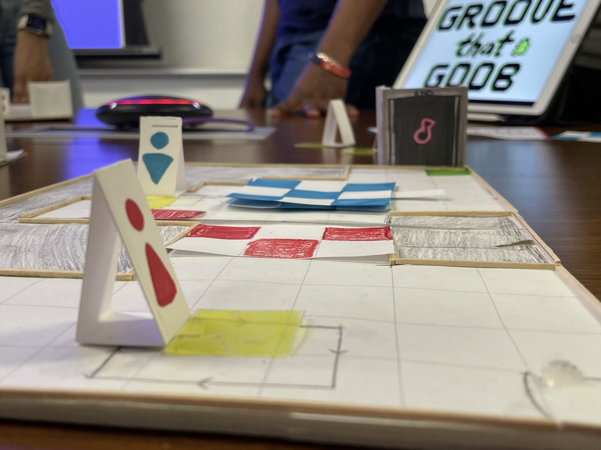
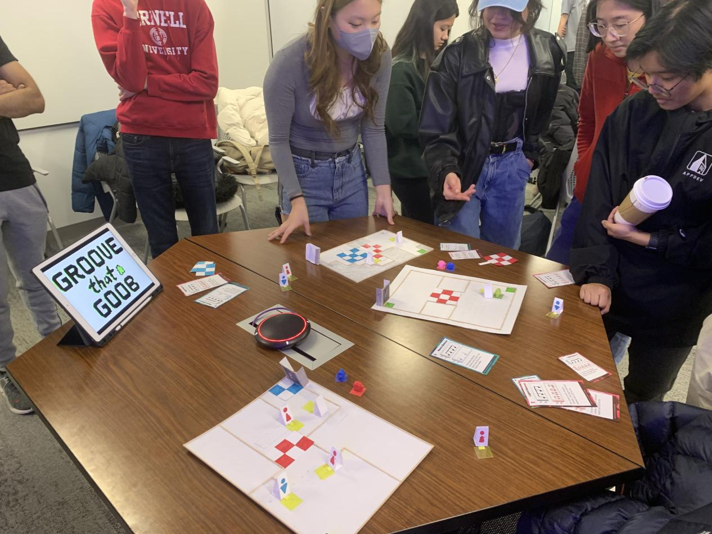

Groove that Goob
Under Construction!!
Role
UX Designer
Character Designer
Animator
Composer
Team
Ashley Xiang, Leon Carranza,
Mikayla Lin, Shivani Lal,
Simon Kapen, Corbin Stickley,
Daniel Thorne, Shania Cabrera
Duration
INFO/CS 3152 February 2022 - present
Tools
Figma, Adobe Photoshop, Procreate
Market Research
- Crypt of the Necrodancer - Crypt of the Necrodancer is a roguelike rhythm game where
players traverse a procedurally-generated dungeon and move to the beat of the music along a
grid. To traverse the dungeon, players must fight enemies who also move to the beat, and learn
their patterns while fighting them. Instead of having players fight enemies, Groove that Goob
forces players to avoid enemies and absorb them to access different parts of the map. This
allows Groove that Goob to apply rhythm in a more thought-provoking way. Groove that Goob
also features limited levels that are tailored to a specific theme and player experience, as
opposed to procedurally generated like Crypt of the Necrodancer.
-
Beat Sneak Bandit - Beat Sneak Bandit is a mobile rhythm stealth game where players avoid
guards by tapping the screen to the beat of the music. Groove that Goob is based on a similar
concept, but uses a top-down approach instead of a side-view approach. Additionally, in Groove
that Goob, players can move in four cardinal directions rather than one, making the game more
versatile. The path to the goal is less linear in Groove that Goob, better challenging players to
strategize their movements. Unlike Beat Sneak Bandit, Groove that Goob is also an alien/space
game with more of a storyline.
-
Hotline Miami - Hotline Miami is a top-down shooter in which players navigate a series of
rooms and stealthily kill enemies by avoiding their line of sight. Similarly to Groove that Goob,
players must approach foes from behind to neutralize the enemies. Likewise, stealth challenges
will be split up into segments between the dangerous disco tiles and walls of dancers. Groove
that Goob challenges players to not only memorize enemy movement patterns but also to do so
on rhythm. More pressure is put on players to navigate a dangerous environment by drastically
limiting how they move. Groove that Goob would also benefit from a broader audience than
Hotline. Groove that Goob combines elements from both rhythm and stealth games to force
players to devise cunning strategies while constantly moving to the beat. The dance floor is full
of dancers with different patterns, and players must master navigating around these patterns to
advance through the game. This causes players to be on their toes, which makes for an
exhilarating experience for each user.
Concept and Ideation
Design Goals
Players who enjoy the thrill of stealth games and the pressure of rhythm games will find
themselves grooving with Goob. Identify a strategy to consume dancers and keep Goob’s alien
persona unknown, all while staying on beat. A high-stakes, high-reward system and some sweet
tunes combine for an exciting dance adventure.
- Grooviness - The movement of enemies and players is determined by the beat of the music
and is directly rooted in the unique soundtrack. This puts music at the center of the game,
allowing players to immerse themselves in the music while playing. Quality sound and layered
rhythms make for a fun, connected, and interactive experience for all. Moving at the right rhythm
is crucial for gaining absorption abilities and making it to the end of the level. Despite this, the
gameplay remains forgiving because players can try to groove to the rhythm as many times as they
would like as long as they evade detection.
- Attentiveness - Certain clubbers grant access to a different rhythm when absorbed. Players
must strategize which dancers to consume to avoid dangerous tiles by utilizing the right
rhythmic timing. Additionally, players must learn the movement patterns of clubbers to avoid
being seen and pinpoint whom to absorb. Players must skillfully plan their route through the
dance floor, as getting caught by a dancer or being lit up by a dangerous tile will stop the party
and end the level.
- Liveliness - Groove that Goob includes exciting elements that combine to make players feel
like they are partying at a rave. Each level takes place on dance floors teeming with vibrancy
and energy. The layout is colorful, the dancers are energetic, and Goob is full of personality.


Nondigital Prototype Rules
In Groove that Goob, the player plays as Goob, a dancing, shapeshifting alien trying to abduct the Milky
Way’s jukebox at the top of a penthouse. The player must navigate Goob to the elevator while avoiding
dancers,
crossing dangerous disco tiles, and taking on different rhythms.
-
Grooving
Goob moves on the 4 base beats of the music that is playing, where each beat is a turn. At the start
of each
turn, the player moves Goob. Since this is a rhythm game, Goob can only move a certain amount of
times on
each
of these base beats. By default, Goob can move in one of the four cardinal directions per turn, or
pass and
wait
for the next turn.
-
Dancers and Disco Tiles
After the player moves, the game master will move the dancers on the board according to their
respective
patterns. There are various types of dancers that will catch Goob and end the game if it walks
within their
line
of sight, which is a single square in front of the dancer. Fast dancers, which are red, can move two
tiles
per
turn, and slow dancers, which are blue, move just one tile every other turn. There are also colored
dance
tiles
that only allow dancers of the same color to pass through.
-
Absorption
If Goob ends up behind a dancer after moving in a cardinal direction, the player can choose to
absorb the
dancer
on the same turn. This allows Goob to remove the dancer from the board and take their place.
Additionally,
Goob
now assumes the dancer’s color and rhythm, changing its movement. Specifically, if it absorbs a red
dancer,
it
now moves two tiles per turn, and if it absorbs a blue dancer, it now moves one tile every other
turn. Once
a
dancer has been absorbed by Goob, Goob can choose to spit the dancer’s rhythm out at any point,
returning to
his
original rhythm and color.
Nondigital Prototype Insights
- Passing / No-Op: We gave players the option to pass their turn instead of moving in a direction.
However,
this
backfired as there were times when players would simply pass many turns in a row and wait for the
enemy to
get close
enough to absorb them. This goes against the idea of a groovy rhythm stealth game, and we want to
discourage
this
sort of playstyle. After discussing this issue with Professor White, he suggested that we make
players
“groove” in
place to the rhythm in order to disguise them from nearby enemies, and so far this seems like
something we
would
like to incorporate into our game. While we can’t say for sure that this is the solution we will go
with,
the non
digital prototype highlighted the problem with allowing players to just stand still for overly long
periods
of time
without any punishment.
- Extremely Punishing Stealth Mechanics: We heard from Professor White that it is really difficult to
make a
satisfying stealth game where the player dies as soon as they are discovered. He recommended that we
implement a way
to recreate the panic of almost being discovered, or being discovered and running away into our game
to make
it
better fit into the stealth genre. Based on this suggestion, we are reconsidering one of our early
concepts
that
included a DDR-style rhythm quicktime event if the player is discovered. This way, players could
escape
suspicion if
they can groove convincingly enough.
-
Level Design Matching Setting: We heard that the way the dancers were laid out in our
prototype
levels made
them feel more like guards than dancers at a party. They suggested that we should add larger clumps
of
dancers to
give levels the feel of a real dance floor. Since we want our level design to match the lore of our
game, we
will
keep this in mind and rethink our level designs and possibly our stealth mechanics to accomplish
this.
-
Rewarding Skilled Play: During one of our playtests, we had a player who got stuck on a
level for a
very
long time. They ended up completing the level, but had a significantly harder time determining the
path of
the dancer
they needed to absorb, and ended up in a sort of stalemate for much longer than we had anticipated.
We
realized
that while we didn’t want to punish players for having a hard time learning enemy patterns, we
wanted to
reward
faster or cleaner completions of our levels. We are currently considering a scoring system for our
game,
which could
take things like speed, rhythm accuracy, and number of absorptions into account. This would also
improve
replayability, as it would encourage players to play the game again in order to beat their previous
high
score.
-
Issues with Slower Obstacles: We realized after we implemented the option for a player to
pass
their turn
that they no longer need to absorb a heavy dancer in order to pass the blue disco tile obstacles. By
simply
moving
once, passing once, and moving again, they can traverse the tiles and completely ignore the
absorption
mechanic.
This presents a big issue, as we want to ensure that players are using the absorption mechanic, but
we don’t
want
to make
every single new enemy simply move faster and faster. Luckily, we got some helpful suggestions from
our
players, who
suggested that we simply make the Heavy Dancers move differently than Goob and the Light Dancers.
They
suggested
that the Heavy Dancers should still move on half beats, but they should jump forward two tiles
rather than
one. Goob
would naturally mimic their movement after absorbing one, which will allow us to craft unique
obstacles that
are
only passable after modifying rhythm and movement.